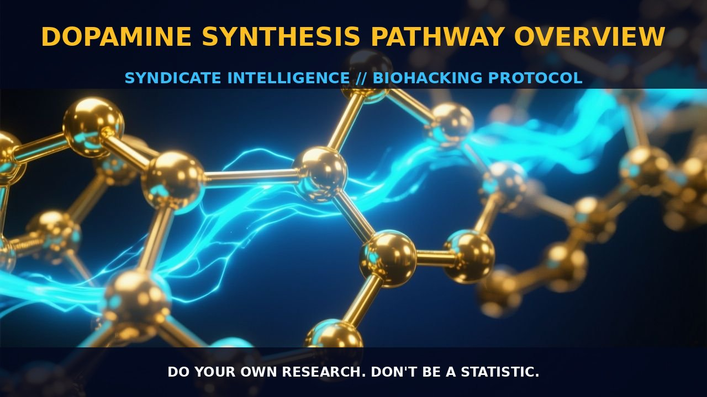

Understanding the Dopamine Synthesis Pathway

1. The Mechanism
Dopamine, a neurotransmitter belonging to the catecholamine and phenethylamine families, is synthesized from tyrosine and DOPA through a series of enzymatic steps. The process begins with the conversion of tyrosine to DOPA by the enzyme tyrosine hydroxylase, which is the rate-limiting step in dopamine synthesis. Following this, DOPA is converted to dopamine by the enzyme DOPA decarboxylase. This enzyme is highly regulated by cofactors such as iron and tetrahydrobiopterin (BH4), and can be influenced by genetic variations, particularly in the CYP450 system.
Once synthesized, dopamine can be further metabolized into norepinephrine and epinephrine, depending on the specific enzymatic pathways and cellular context. The dopamine synthesis pathway is not only essential for the maintenance of normal physiological functions but also plays a crucial role in various neurological disorders. Dysregulation of dopamine levels can lead to conditions such as Parkinson's disease, schizophrenia, ADHD, and restless legs syndrome. Understanding these mechanisms is crucial for therapeutic interventions.
2. Biological Leverage
The biological leverage of the dopamine synthesis pathway lies in its influence on a wide range of physiological and behavioral functions. Dopamine systems in the brain are intricately linked to reward and motivation, with dopamine-boosting drugs and stimulants such as cocaine, amphetamine, alcohol, and nicotine often leading to addictive behaviors. Dopamine plays a critical role in motor control, as seen in Parkinson's disease, where the degeneration of dopamine-producing neurons leads to motor deficits. Additionally, dopamine systems are involved in hormone secretion and the regulation of various bodily functions outside the central nervous system.
The regulation of dopamine synthesis at the cellular level is influenced by multiple factors, including genetic variations and environmental cues. For example, genetic variations in the CYP450 system can lead to individual differences in drug metabolism, affecting the efficacy and side effects of medications that target dopamine systems. Environmental factors such as diet and stress can also influence dopamine synthesis and metabolism, impacting overall neurotransmitter balance. Understanding these factors is crucial for developing personalized approaches to optimize dopamine levels and enhance cognitive and motor functions.
3. Tactical Implementation
Implementing dopamine synthesis enhancement involves a combination of dietary, pharmacological, and lifestyle strategies. One approach is to supplement with precursors such as tyrosine and phenylalanine, which are the building blocks for dopamine synthesis. These precursors can be found in foods such as dairy products, eggs, and meat, or can be taken in supplement form. When supplementing with tyrosine and phenylalanine, it is important to consider the dose and timing to optimize absorption and utilization by the body.
Pharmacological interventions can also be used to enhance dopamine synthesis. L-DOPA, a direct precursor to dopamine, can be used to boost dopamine levels, particularly in individuals with conditions such as Parkinson's disease. However, it is important to monitor the dose and timing to avoid excessive dopamine levels, which can lead to dysregulation syndrome. Additionally, compounds that support the activity of tyrosine hydroxylase, such as iron and BH4, can be used to enhance the rate-limiting step in dopamine synthesis.
Lifestyle factors such as regular exercise, adequate sleep, and stress management can also support dopamine synthesis and metabolism. Exercise has been shown to increase the availability of tyrosine and DOPA, enhancing dopamine synthesis in the brain. Adequate sleep and stress management are crucial for maintaining optimal levels of neurotransmitters and supporting the body's internal regulation mechanisms. By combining dietary, pharmacological, and lifestyle strategies, individuals can optimize dopamine synthesis and enhance cognitive and motor functions.
Prostar Life Hack
Supplement with tyrosine and phenylalanine, and consider using L-DOPA for individuals with conditions like Parkinson's disease. Ensure the dose and timing are optimized for better absorption and utilization.
[ AUTHOR: LEAD TECHNICAL RESEARCHER ]